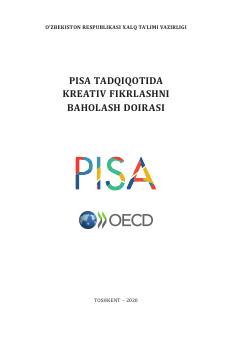

PTPISA tadqiqotida o‘quvchilarning kreativ fikrlashini baholash mezonlari va uslubiy qo‘llanmasi.
Mazkur qo‘llanmada PISA xalqaro tadqiqotida o‘quvchilarning kreativ fikrlashini baholash yo‘nalishi bo‘yicha asosiy tushunchalar, yondashuvlar va topshiriq namunalari keltirilgan. Kitob umumiy o‘rta ta’lim muassasalari o‘qituvchilari, metodistlar va ta’lim sohasi mutaxassislari uchun mo‘ljallangan.